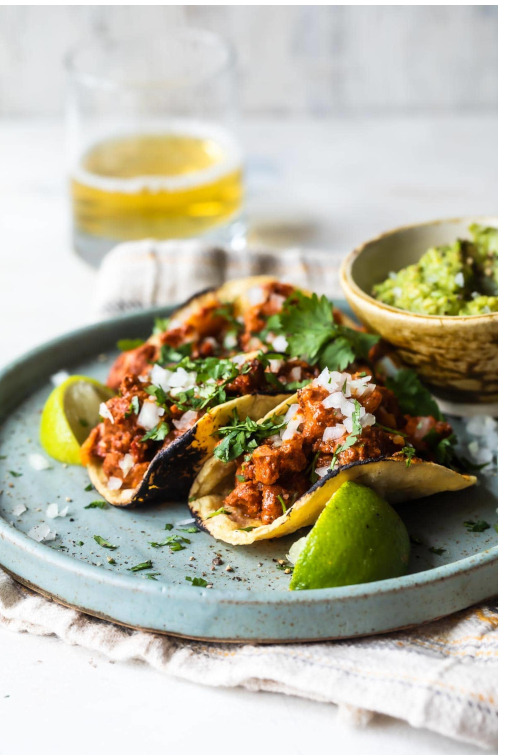

Jack's Famous Mexican Taco's

There's not a human on this planet who doesn't enjoy themselves a couple of tacos and Jack Hislop
has been on his mission to perfect his ancient Mexican family recipe for years now. With a combination
of good quality steak and his prefered choice of corn tortilla, there's nothing stopping you from being able to
make Jack's legendary Mexican tacos!
To start, you'll need
- Corn or Flour Tortilla
- Steak
- Cast Iron Pan
- White Onions
- Tomatoes
- Tongs
Now it's time to get cooking!
- Finely dice your onions and tomatoes and mix them together in a bowl
- Heat your cast iron skillet as hot as possible (it should be smoking)
- Place the steak in and cook for 1 minute 30 seconds on each side
- Once the crust is set, turn the heat to medium and cook for 1 minute 30 seconds on each side again
- Remove the steak and let it rest as you prepare the tortillas
- In the same pan, toss your choice of tortilla, corn or flour, and flip every 20 seconds until lightly toasted and warm
- Cut your steak into strips and load them into your tortillas
- Add your onions and tomatoes on top of your tacos and enjoy Jack's legendary taco recipe!